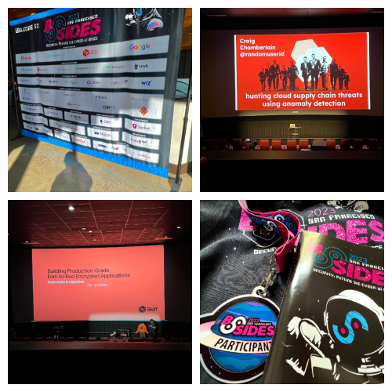

BSides San Francisco: Infosec Conference 2023
What is BSidesSF?
BSides San Francisco is a non-profit organization designed to advance the body of Information Security knowledge by providing an annual, two-day, open forum for discussion and debate for security engineers and their affiliates. They produce a conference that is a source of education, collaboration, and continued conversation for information technologists and those associated with this field. The technical and academic presentations at BSidesSF are given in the spirit of peer review and advanced knowledge dissemination. This allows the field of Information Security to grow in breadth and depth and continue in its pursuit of highly advanced, scientifically based knowledge.
As a first time attendee, I had a ton of fun. Had the pleasure and honor to sit in on some of the presentations and learn from the amazing presenters. It was such a humbling experience. And lastly, a huge shout out to the BSidesSF staff, volunteers, presenters, and everyone that was involved in making this such an awesome event. Thank you and can't wait till next year!
